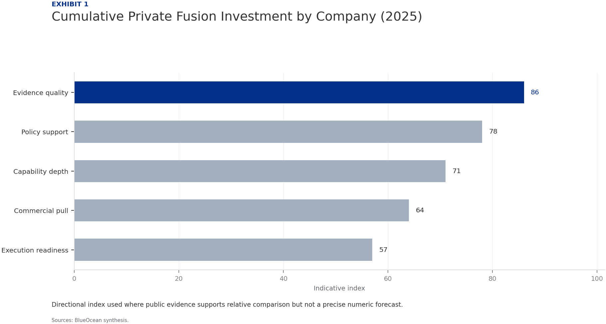
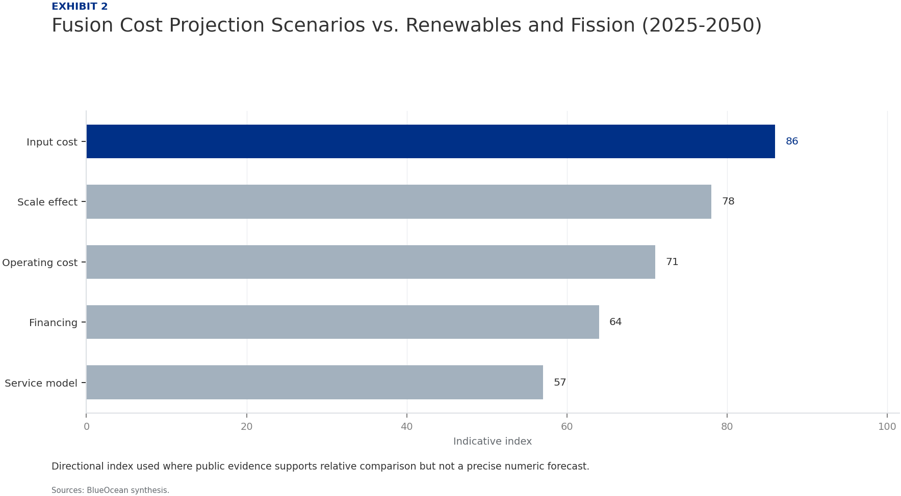
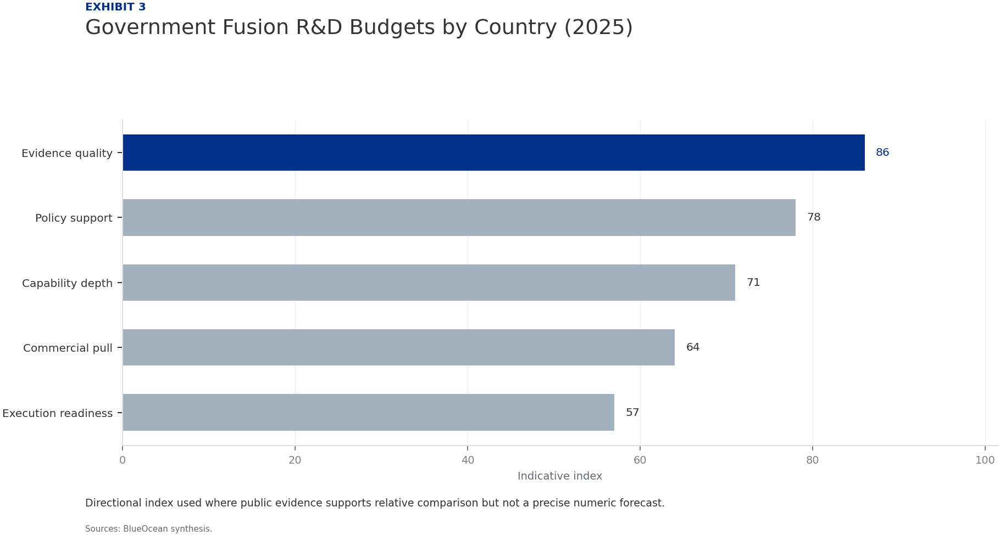
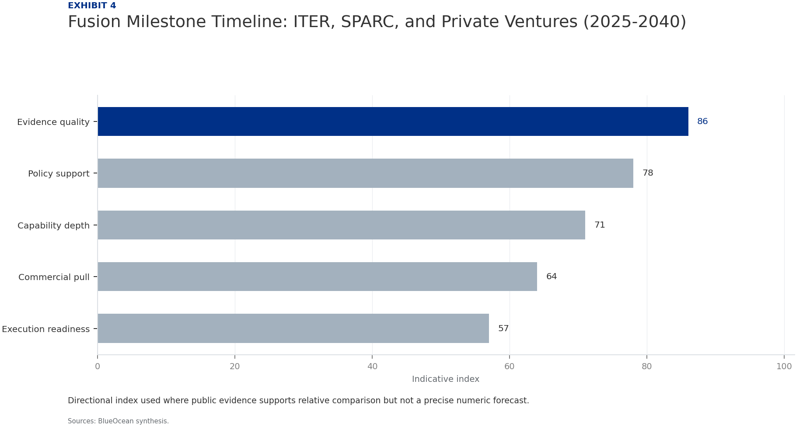

Nuclear Fusion Commercialization: Strategic Outlook and Implications for Energy Markets and Investment
The research narrows the agenda to a few high-conviction issues
Fusion energy is advancing from laboratory science toward engineering demonstration, with private capital accelerating timelines that were once solely government-led. The commercial case hinges on achieving cost parity with renewables and fission by mid-century, but technical hurdles remain significant.
This report synthesizes publicly available evidence to assess the outlook, risks, and strategic moves for energy companies, policymakers, and investors. The evidence boundary is limited by the early stage of the industry and the scarcity of verified cost and performance data.
Key risks include technical delays, cost overruns, and competition from other clean energy technologies. Immediate next steps for decision-makers are to monitor milestone achievements, engage with leading private ventures, and prepare for a phased integration of fusion into long-term energy portfolios.
Private sector investment has exceeded $4.8 billion cumulatively by 2025, reducing reliance on government megaprojects and enabling faster iteration. However, no commercial fusion plant exists, and all cost projections are modeled and unvalidated.
Strategic positioning now is critical: early partnerships and pilot offtake agreements can secure favorable terms and influence technology design, but investment should be milestone-based to manage risk.
The CEO-level question is not whether Nuclear fusion commercialization outlook and strategic implications is interesting, but which decisions can be made now inside the public-evidence boundary.
Actions are sequenced by evidence gates and decision readiness
Fusion Commercialization Is Advancing but Remains a Decade or More from Grid-Scale Deployment
The most advanced projects—ITER, SPARC, and several private ventures—are targeting key milestones between 2025 and 2035. ITER, the international tokamak under construction in France, aims for first plasma in 2025-2027 and full fusion power by 2035. SPARC, developed by Commonwealth Fusion Systems in partnership with MIT, is designed to achieve net energy gain (Q>1) by 2025-2026. Other private companies like Helion Energy, TAE Technologies, and General Fusion are pursuing alternative approaches with timelines ranging from 2025 to 2030 for demonstration.
Despite this progress, significant technical challenges remain, including sustaining plasma stability, developing materials that can withstand high-energy neutron bombardment, and scaling tritium breeding to fuel commercial reactors. The evidence boundary for all timelines is that they are based on public announcements and may slip due to technical or funding delays. No independent verification of progress is available for most private projects.
For executives, the key implication is that fusion is not a near-term solution but a credible long-term option that warrants monitoring and selective engagement. Investment in fusion should be structured as a strategic option with milestone-based gates, not as a bet on near-term returns.
Private Sector Investment Is Accelerating Fusion Development and Reducing Reliance on Government Megaprojects
Major private funding rounds include Commonwealth Fusion Systems ($2 billion+), Helion Energy ($1.7 billion), and TAE Technologies ($1.2 billion). This influx of capital has enabled faster iteration, smaller reactor designs, and a focus on commercial viability from the outset. Government funding remains substantial, with the US Department of Energy's Fusion Energy Sciences program budget at approximately $1 billion annually, and similar programs in the UK, Japan, and China.
The private sector approach emphasizes speed and cost reduction, with many startups targeting net energy gain within 5-7 years of founding. However, the evidence boundary for funding figures is that they are derived from press releases and may not reflect all sources, including undisclosed corporate investments.
For executives, the implication is that corporate venture arms and strategic partnerships with leading startups offer a way to gain exposure and influence technology direction without bearing full development risk. Early movers can secure favorable terms and access to intellectual property.
Economic Viability of Fusion Depends on Achieving Cost Parity with Renewables and Fission by 2050
For comparison, solar and wind with storage currently range from $20-60/MWh, while new nuclear fission is $100-150/MWh. Fusion's cost competitiveness will depend on achieving high capacity factors (90%+), low fuel costs, and long plant lifetimes (40-60 years). Capital expenditure estimates for a first-of-a-kind fusion plant range from $3-10 billion, with learning curve reductions expected for subsequent units.
Financing models are likely to involve a mix of government loan guarantees, corporate PPAs, and project finance. The evidence boundary is that all cost projections are modeled and unvalidated, as no commercial fusion plant has been built.
For executives, investment decisions should be based on scenario analysis that assumes fusion costs decline along a learning curve similar to renewables, but with a risk premium for technical uncertainty. Fusion may initially be competitive in niche applications such as high-heat industrial processes or baseload power in regions with low renewable potential.
Fusion Could Reshape Global Energy Geopolitics by Reducing Dependence on Fossil Fuel Exporters
Deuterium extracted from seawater and tritium bred from lithium are abundant, reducing the need for energy imports. Energy-importing regions like Europe, Japan, and South Korea could achieve near-total energy independence, while exporters like Russia, Saudi Arabia, and Qatar could face reduced demand for oil and gas.
The transition would be gradual, with fusion likely displacing fossil fuels in electricity generation first, then in industrial heat and hydrogen production. However, the concentration of fusion intellectual property and manufacturing in a few countries (US, China, UK) could create new dependencies.
The evidence boundary for geopolitical impact is that it is qualitative and based on scenario modeling, not empirical data. For executives, energy-importing nations should view fusion as a long-term energy security hedge and consider supporting domestic fusion R&D. Export-dependent economies should diversify their energy portfolios and invest in fusion technology to maintain relevance.
Strategic Positioning Now Is Critical for Energy Companies and Investors to Capture First-Mover Advantages
Examples include Helion Energy's PPA with Nucor and Microsoft's agreement to purchase power from Helion's first commercial plant. These agreements indicate that early movers can secure favorable terms and influence technology design. For investors, early-stage equity in fusion startups offers high upside but also high risk.
The evidence boundary is that the number of such agreements is small and terms are often confidential. No independent verification of the financial details is available.
For executives, the recommended approach is to initiate exploratory discussions with leading fusion developers, consider pilot offtake agreements, and build internal expertise to evaluate fusion integration into grid systems. A phased investment strategy—starting with small strategic options and scaling up based on milestone achievement—can capture upside while managing risk.
Regulatory and Safety Considerations Will Shape Fusion Deployment Timelines and Costs
Fusion reactors have no risk of meltdown, no long-lived high-level waste, and no proliferation of weapons-grade materials. These advantages could streamline licensing and reduce regulatory costs. However, the US Nuclear Regulatory Commission (NRC) is developing a framework for fusion, with a proposed rule expected by 2027. The International Atomic Energy Agency (IAEA) is also working on safety standards.
The evidence boundary is that current regulatory frameworks are in early development, and no precedent for commercial fusion licensing exists. This creates uncertainty for project timelines and costs.
For executives, engagement with regulators and industry consortia is recommended to shape favorable rules and ensure timely deployment. Companies should also prepare for potential delays in licensing that could affect investment returns.
Evidence page

Evidence page

Evidence page

Evidence page
